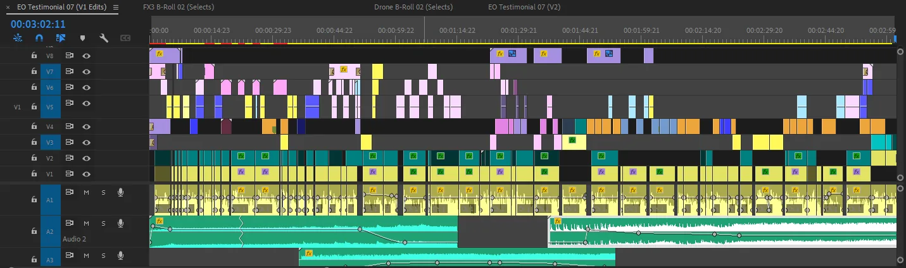

Filmed and edited in a month between 11/16-12/11 2023, this testimonial for medical cannabis guidance group, "EO" with cancer survivor, Ethan Zohn, is a textbook example of amplifying a big one-day shoot with supplementary visuals and SFX.
It's a fusion of a live interview, a day's worth of 2-camera b-roll, and stock (static and live). We went through a couple iterations on all the color and sound, too, so it was jam packed with the time we had. Time well spent! This project also got extra SFX and mastering work from Trent at Rian/Hunter Productions, which always adds an extra dimension back to the footage.
